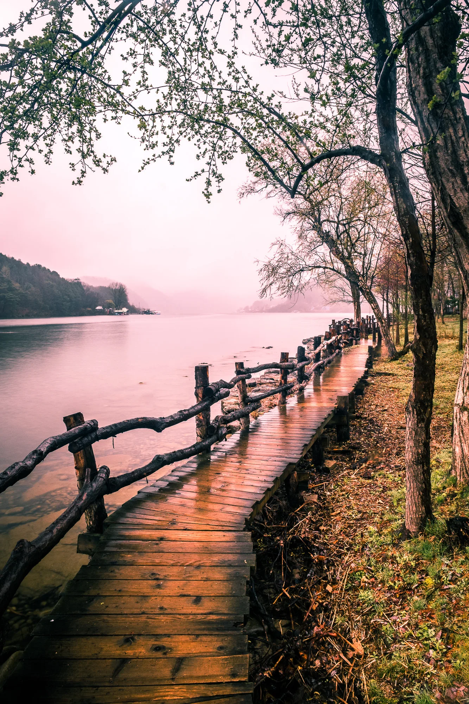
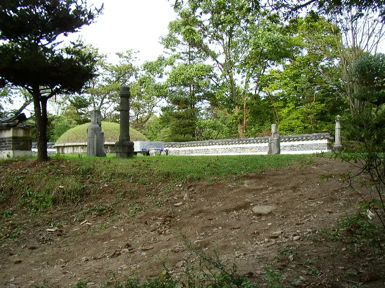
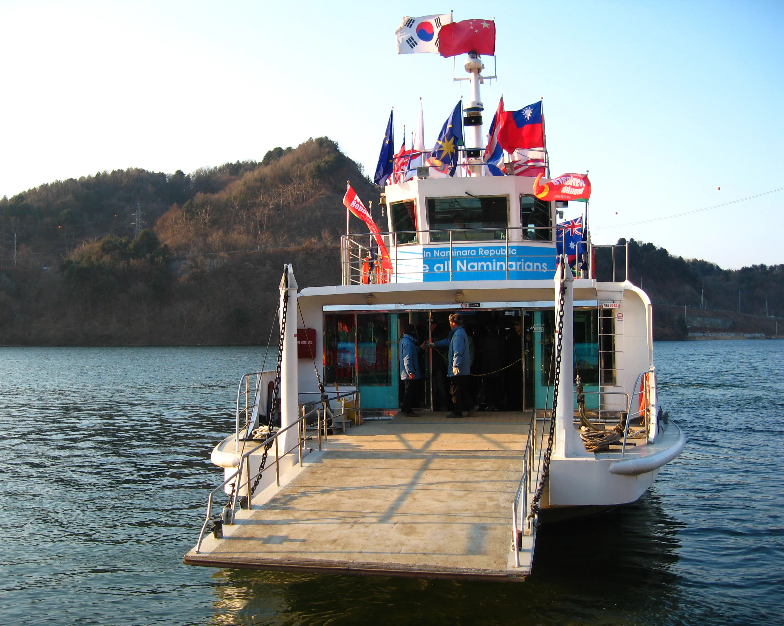
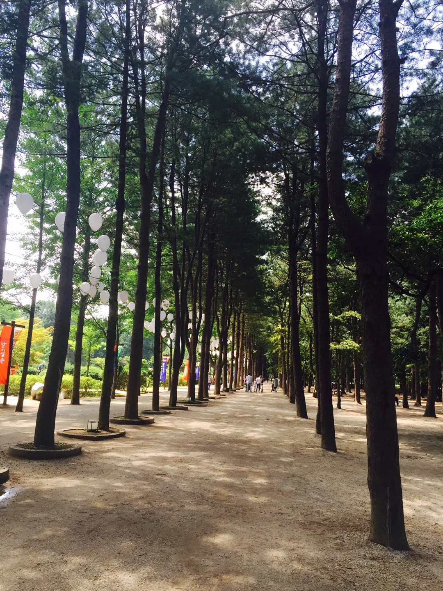

▲ 북한강을 따라 이어지는 남이섬 강변 산책로. 섬 둘레를 따라 걷는 것만으로도 한 시간 남짓 걸린다 사진=Wikimedia Commons
강원도 춘천시와 경기도 가평군의 경계, 북한강 한가운데 떠 있는 섬 남이섬은 다리가 없다. 오직 배를 타야만 들어갈 수 있다. 그래서 남이섬은 스스로를 '나미나라공화국'이라는 하나의 작은 나라로 소개하고, 입장료 대신 '입국비'라는 표현을 쓴다. 메타세쿼이아길과 은행나무길 같은 사진 명소로 워낙 유명하다 보니 정작 배편·액티비티·주변 연계 코스는 놓치고 가는 경우가 많다. 이 기사는 남이섬으로 향하는 배편부터 짚와이어·자전거 같은 액티비티, 2026년 기준 입장료와 주차, 강촌 레일파크와 묶는 당일 코스까지 방문 순서대로 정리했다.
1. 섬 이름은 남이 장군에게서, 나라 이름은 상상에서
남이섬이라는 이름은 섬 북쪽 언덕의 돌무더기가 조선 초 무신 남이(南怡) 장군의 묘라는 오랜 민간전승에서 나왔다. 다산 정약용의 기행문에도 이 섬을 남이섬(南怡苫)으로 부른 기록이 남아 있을 만큼 유래가 오래됐다. 실제로 섬에는 남이 장군을 기리는 묘역이 조성돼 있어, 산책로 초입에 들러볼 수 있다.

▲ 남이섬이라는 지명의 유래가 된 남이 장군 묘역. 섬 이름의 오랜 민간전승을 보여주는 자리다 ⓒ Wikimedia Commons
섬이 지금 모습을 갖춘 건 훨씬 나중이다. 1944년 청평댐 건설로 주변 저지대가 물에 잠기며 지금 같은 섬이 됐고, 1965년 민병도가 이곳을 사들여 이듬해 종합휴양지로 개발하기 시작했다. 2006년 3월 1일에는 '국가 개념을 표방하는 특수 관광지'라는 콘셉트로 나미나라공화국을 선포했다. 지명은 옛 전설에서, 브랜드는 동화적 상상에서 나온 셈이다. 방문객은 매표소에서 '여권'을 발급받아 이 작은 공화국을 드나드는 기분을 낼 수 있다.
2. 가평선착장에서 배로 5분 — 가는 법·배편
남이섬으로 가려면 반드시 가평 남이섬선착장을 거쳐야 한다. 행정구역상 섬은 강원도 춘천시에 속하지만, 배를 타는 선착장은 경기도 가평군에 있다. 선착장에서 남이섬까지는 배로 약 5분이면 닿는다.

▲ 'In Naminara Republic' 문구를 단 남이섬행 선박. 각국 국기를 매달고 강을 오간다 ⓒ Wikimedia Commons
| 구분 | 시간 |
|---|---|
| 남이섬행 첫배 | 07:30~08:00(얼리버드 입장 가능) |
| 배차 간격 | 오전·성수기 10~20분, 그 외 30분 |
| 남이섬발 막배 | 21:00~21:30(성수기 연장 운항) |
| 운영시간 | 매일 08:00~21:00, 연중무휴 |
서울에서 대중교통으로 갈 경우 경춘선 전철을 타고 가평역에서 내려 택시나 시내버스(10-4번)로 선착장까지 이동하면 된다. 홍대입구역·명동역·동대문역사문화공원역 등에서 매일 오전 출발하는 직행 셔틀버스도 운영된다. 자가용이라면 내비게이션에 '가평선착장' 또는 '남이섬선착장'을 입력하면 되고, 서울양양고속도로나 46번 국도(경춘로)를 타고 가평 방면으로 이동하는 경로가 일반적이다. 배 시간과 배차 간격은 계절·기상 상황에 따라 바뀔 수 있어 방문 전 공식 사이트에서 최신 배편 확인 가능하다.
3. 메타세쿼이아길·잣나무길 — 사계절 포토스팟
남이섬 산책의 뼈대는 크게 세 갈래다. 남이섬을 상징하는 메타세쿼이아길, 계수나무·단풍나무·은행나무가 섞여 계절마다 색이 달라지는 중앙 산책로, 그리고 사철 푸른 잣나무길이다. 가을에는 계수·단풍나무가 10월 중순부터, 은행나무가 10월 하순부터 물들기 시작하고, 메타세쿼이아는 가장 늦은 11월 초순에야 고운 갈색으로 절정에 이른다. 잣나무길은 계절과 무관하게 초록빛을 유지해, 알록달록한 가을 산책로와 대비되는 풍경을 만든다.

▲ 남이섬 잣나무길. 사철 푸른 침엽수 가로수가 늘어서 있어 계절과 무관하게 산책하기 좋다 ⓒ Wikimedia Commons
섬 둘레를 따라 걷는 강변 산책로도 놓치기 아깝다. 나무로 짠 데크길이 강가를 따라 이어져 있어, 유명 가로수길만큼 붐비지 않으면서도 물안개 낀 북한강 풍경을 조용히 즐길 수 있다. 섬 안에는 이 외에도 유리공예·설치미술 같은 포토스팟이 곳곳에 흩어져 있어, 가로수길을 다 걷고도 반나절은 더 머물게 되는 경우가 많다.
4. 짚와이어·자전거·나눔열차 — 걷기 말고 탈거리
남이섬은 걷는 재미 못지않게 탈거리도 많다. 가장 눈에 띄는 건 스카이라인 짚와이어다. 80m 높이 타워에서 출발해 약 1km를 활강하며 남이섬으로 들어가는 코스로, 속도에 따라 두 갈래로 나뉜다. 시속 40km로 남이섬에 바로 도착하는 패밀리 코스와, 시속 80km로 자라섬에 먼저 도착한 뒤 배를 갈아타고 남이섬에 들어가는 어드벤처 코스다. 이용요금에는 남이섬 입장료와 돌아오는 선박료가 포함돼 있어, 일반 매표소를 거치지 않고 바로 섬에 입장하는 셈이다. 짚와이어는 오전 9시부터 오후 6시까지 연중무휴로 운영된다.

▲ 북한강변에서 즐기는 수상레저와 멀리 보이는 짚와이어 타워. 남이섬 일대는 강을 낀 액티비티가 다양하다 ⓒ Wikimedia Commons
섬 안에서는 자전거가 대표 이동 수단이자 액티비티다. 섬 중앙 바이크센터에서 일반 자전거(싱글·커플·패밀리)부터 전기자전거, 이지바이크까지 다양하게 빌릴 수 있고, 운영시간은 오전 9시부터 오후 6시까지다. 걷기 부담스러운 방문객을 위해서는 선착장에서 섬 중앙까지 오가는 꼬마 열차 '나눔열차'도 운행된다. 참고로 남이섬에는 모노레일은 따로 운영되지 않으며, 이 나눔열차가 그 역할을 대신한다. 정확한 최신 요금과 운영시간은 공식 사이트 육상 액티비티 안내에서 확인 가능하다.
5. 입장료·운영시간·주차
남이섬 입장료(입국비)에는 왕복 선박 이용료가 포함돼 있다. 2026년 기준 성인은 19,000원, 중·고등학생은 16,000원, 36개월~초등학생은 13,000원이며, 36개월 미만은 무료다. 만 70세 이상, 장애의 정도가 심한 중증 장애인, 국가유공자·유족증 소지자 본인도 청소년과 같은 16,000원 우대 요금이 적용되는데, 매표소에서 신분증이나 복지카드·유공자증을 제시해야 현장 할인을 받을 수 있다.
| 항목 | 내용 |
|---|---|
| 입장료(성인) | 19,000원 · 왕복 선박료 포함 |
| 입장료(청소년) | 16,000원 · 중·고등학생, 경로·장애인·국가유공자 |
| 입장료(어린이) | 13,000원 · 36개월~초등학생 |
| 운영시간 | 08:00~21:00, 연중무휴 |
| 주차요금 | 기본 6,000원(카카오T 결제 시 할인), 초과 시 1시간당 1,000원 |
| 위치 | 경기 가평군 가평읍 자연학교길 1(남이섬선착장) |
주차장은 가평선착장 쪽에 제1~4주차장이 마련돼 있고, 장애인 전용 구역도 별도로 있다. 정산은 카드 결제만 가능한 경우가 많으니 미리 참고해두면 좋다. 정확한 최신 요금과 각종 할인 조건(경기도민, 단체 등)은 남이섬 공식 사이트 입장요금 안내에서 확인 가능하다.
6. 강촌 레일파크와 묶는 당일 코스
남이섬과 가까운 강촌은 옛 경춘선 폐선 구간을 활용한 레일바이크로 유명하다. 강촌레일파크는 김유정 레일바이크(북한강을 끼고 달리는 국내 최대 규모 코스), 경강 레일바이크, 가평 레일바이크(전동식) 세 코스를 운영하는데, 강줄기를 옆에 끼고 달리는 구간이 많아 남이섬 강변 풍경과 이어 붙이기 좋다. 오전에는 남이섬에서 산책과 짚와이어를 즐기고, 오후에는 강촌으로 이동해 레일바이크를 타는 식으로 하루 일정을 짜는 여행자가 많다.

▲ 남이섬을 감싸고 도는 북한강 일대. 강촌·청평까지 강줄기를 따라 이동하는 드라이브 코스가 인기다 ⓒ Wikimedia Commons
다만 강촌레일파크 세 코스 모두 정확한 요금·운영시간은 홈페이지에서 계절별로 갱신되는 편이니, 방문 전 강촌레일파크 공식 사이트에서 코스별 요금 확인 가능하다. 남이섬~강촌 구간은 자가용으로 20~30분 안팎, 대중교통으로는 경춘선 전철을 갈아타고 이동하는 방법이 일반적이다. 단풍철 주말에는 남이섬과 강촌 모두 붐비는 만큼, 가급적 오전 일찍 남이섬부터 들러 순서를 정해두는 편이 여유롭다.
✅ 남이섬, 가기 전 체크리스트
· 섬 이름은 남이 장군 전설에서, '나미나라공화국'은 2006년 선포된 관광 브랜드
· 가평선착장에서 배로 약 5분, 첫배 07:30~08:00·막배 21:00~21:30
· 입장료(입국비)는 왕복 배삯 포함 성인 19,000원, 청소년 16,000원, 어린이 13,000원
· 메타세쿼이아는 11월 초순, 은행나무는 10월 하순~11월 중순이 단풍 절정
· 짚와이어는 패밀리(남이섬 직행)·어드벤처(자라섬 경유) 두 코스, 요금에 입장료·선박료 포함
· 남이섬에 모노레일은 없고, 선착장~섬 중앙을 잇는 '나눔열차'가 운행
· 주차는 유료(기본 6,000원, 카카오T 결제 시 할인)
· 강촌레일파크와 묶으면 산책+레일바이크 당일 코스 완성